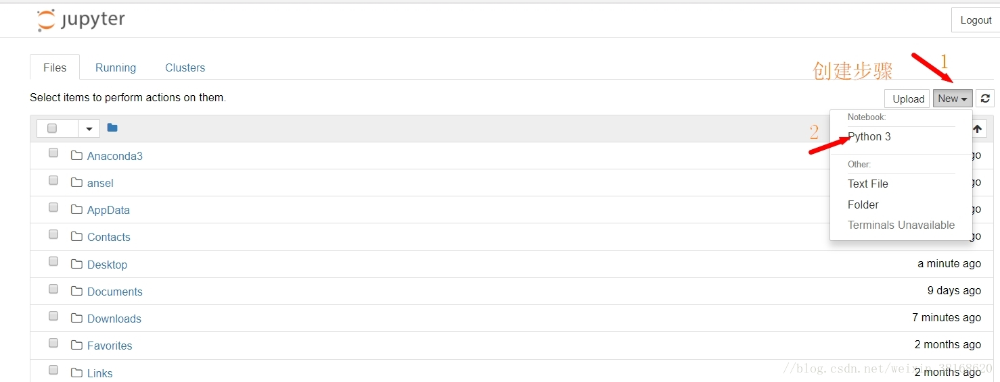
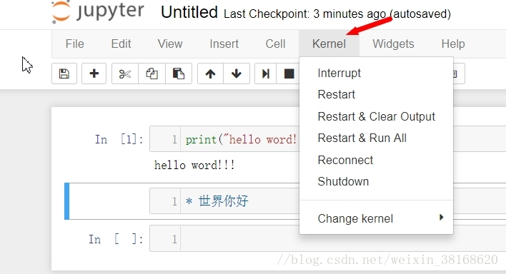

抄袭自博客学习Python的做笔记神器——Jupyter Notebook
Jupyter Notebook
Jupyter Notebook(又称IPython Notebook)是一个交互式地笔记本,支持超过40种编程语言.自Jupyter Notebook 1.0发布以来,越来越多的科学家,研究者,教师使用Jupyter Notebook处理数据,写研究报告,甚至编写书籍.
安装
在Anaconda官网anaconda.com下载,Anaconda自带了Numpy,Scipy,Matplotlib等多种Python开发包和Jupyter Notebook,除此之外,anaconda能轻松地配置环境方便学习.
基本使用
快捷键
Jupyter Notebook有两种不同的键入模式.编辑模式允许你在单元格中输入代码或文本并且被绿色的边框标识.命令模式把按键和命令绑定,并且被灰色的边框与蓝色的边缘标识.
命令模式下(ESC进入):
| 按键 | 命令 | 按键 | 命令 |
|---|---|---|---|
F |
查找并替换 | A |
向上插入单元(Above) |
Ctrl-Shift-F |
打开命令面板 | B |
向下插入单元(Below) |
Ctrl-Shift-P |
打开命令面板 | X |
剪切选中单元 |
P |
打开命令面板 | C |
拷贝选中单元 |
Enter |
进入编辑模式 | Shift-V |
向上粘贴 |
Shift-Enter |
运行单元并选择下一行 | V |
向下粘贴 |
Ctrl-Enter |
运行选中单元 | Z |
撤销 |
Alt-Enter |
运行单元并向下插入一行 | D-D |
删除选中单元(Delete) |
Y |
转为code模式 | Ctrl-S |
保存并检查 |
M |
转为md模式 | S |
保存并检查(Save) |
R |
其他格式 | L |
切换行号(Line) |
1~6 |
使单元成为1~6级标题 | O |
显示/隐藏输出(Output) |
K |
上一个单元(vim) | Shift-O |
全部/局部显示输出 |
Up |
上一个单元 | H |
显示快捷键 |
Down |
下一个单元 | I-I |
中断内核(Interrupt) |
J |
下一个单元(vim) | 0-0 |
重启内核(0 |
Shift-K |
向上多选 | Esc |
好像没什么用? |
Shift-Up |
向上多选 | Q |
同上 |
Shift-Down |
向下多选 | Shift-L |
所有单元显示行号 |
Shift-J |
向下多选 | Shift-Space |
向上滚一页 |
Shift-M |
合并选中单元或与下方一个单元合并(Merge) | Space |
向下滚一页 |
编辑模式(Enter进入)
| 按键 | 命令 | 按键 | 命令 |
|---|---|---|---|
Tab |
代码补全和缩进 | Shift-Tab |
提示信息 |
Ctrl-] |
缩进 | Ctrl-[ |
反缩进 |
Ctrl-A |
全选 | Insert |
覆盖/插入 |
Ctrl-Z |
撤销 | Ctrl-Y |
恢复 |
Ctrl-/ |
注释 | Ctrl-D |
删除整行 |
Ctrl-U |
取消选择,撤销 | Alt-U |
恢复选择 |
Ctrl-Home |
单元始 | Ctrl-Up |
单元始 |
Ctrl-End |
单元末 | Ctrl-Down |
单元末 |
Ctrl-Left |
词首 | Ctrl-Right |
词尾 |
Ctrl-Backspace |
删除前单词 | Ctrl-Delete |
删除后单词 |
Ctrl-M |
进入命令模式 | Esc |
进入命令模式 |
Ctrl-Shift-F |
打开命令面板 | Ctrl-Shift-P |
打开命令面板 |
Shift-Enter |
运行单元并选中下一行 | Ctrl-Enter |
运行选中的单元 |
Alt-Enter |
运行单元并向下插入 | Ctrl-Shift-Minus |
在光标处拆分单元 |
Ctrl-S |
保存并检查 |
运行

Jupyter Notebook采用浏览器作为界面,首页显示当前路径,默认为用户文件夹.点击New->Python 3将新建一个笔记文件,同时启动一个运算内核进程与其交互.每个打开的Notebook页面都有单独的Python进程与之对应,在Notebook中输入的所有命令都将有浏览器传递到服务器程序再转发带该进程运行.文档的读取与保存有服务器进程完成,而运算内核进程则负责运行用户的程序.因此即使用户程序造成运算内核进程异常退出也不会丢失任何用户输入的数据.在关闭服务器进程之前,请确保所有的Notebook都已保存.
操作单元
Jupyter Notebook由多个竖向排列的单元构成,每个单元有两种样式:
- Code:Code单元自然是用来写代码的,使用[
Shift-Enter]执行代码,并在本单元下方显示输出.快捷键(Y) - Markdown:使用Markdown的格式化文本.快捷键(
M)
Jupyter Notebook有两种模式,命令模式和编辑模式.编辑模式允许你在单元格中输入代码或文本并且被绿色的边框标识.命令模式把按键和命令绑定,并且被灰色的边框与蓝色的边缘标识.
操作运算进程
在代码单元中输入的代码都将在运算核进程中的运行环境中执行.当执行某些代码出现问题时,可以通过Kenel菜单中的选项操作该进程:

- Interrupt:中断运行当前进程(
I-I),当程序进入死循环时可以使用它中断程序 - Restart:当运算核在扩展模块的程序中进入死循环,无法通过Interrupt中断时,可以通过此选项重新启动运算核进程
上传博文
Jupyter Notebook支持转换为多种格式,包括博客所用的md文件.文件->下载.